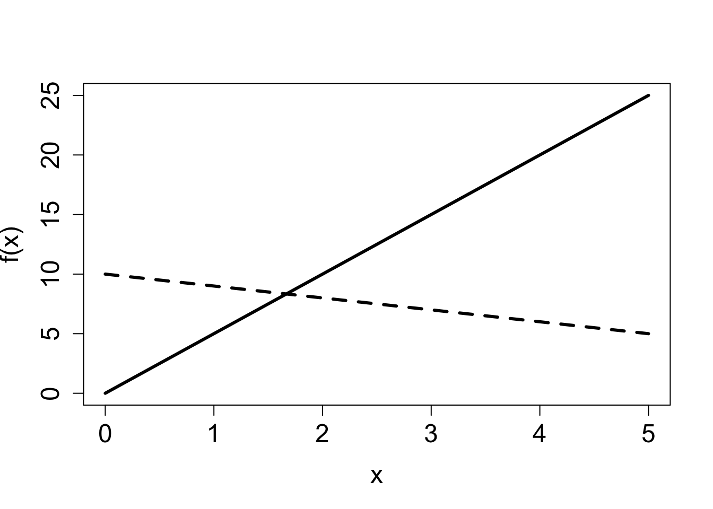
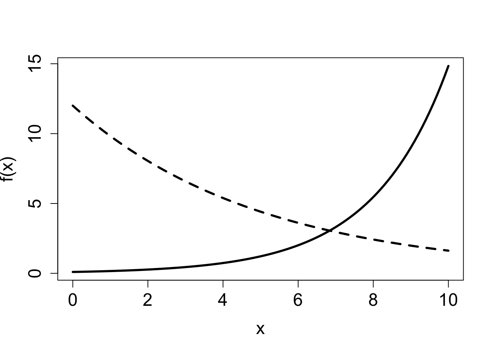
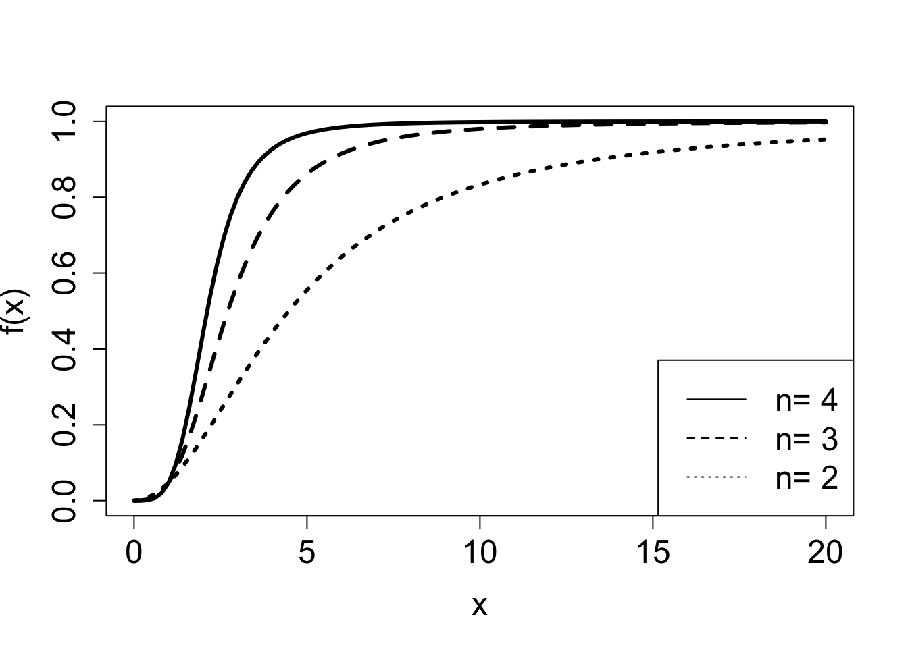
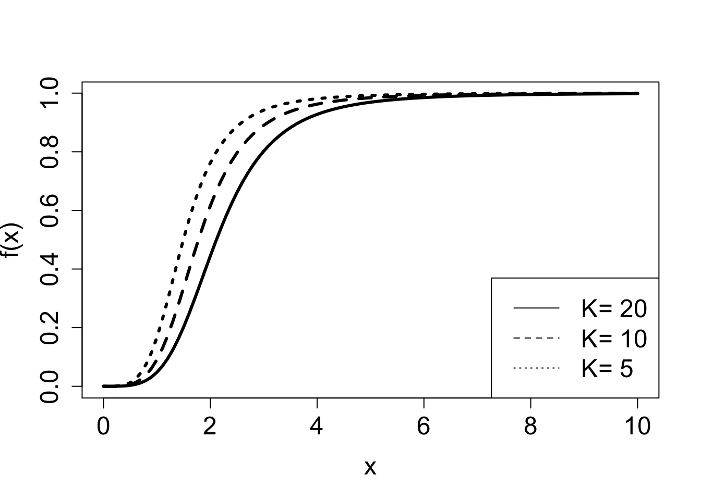
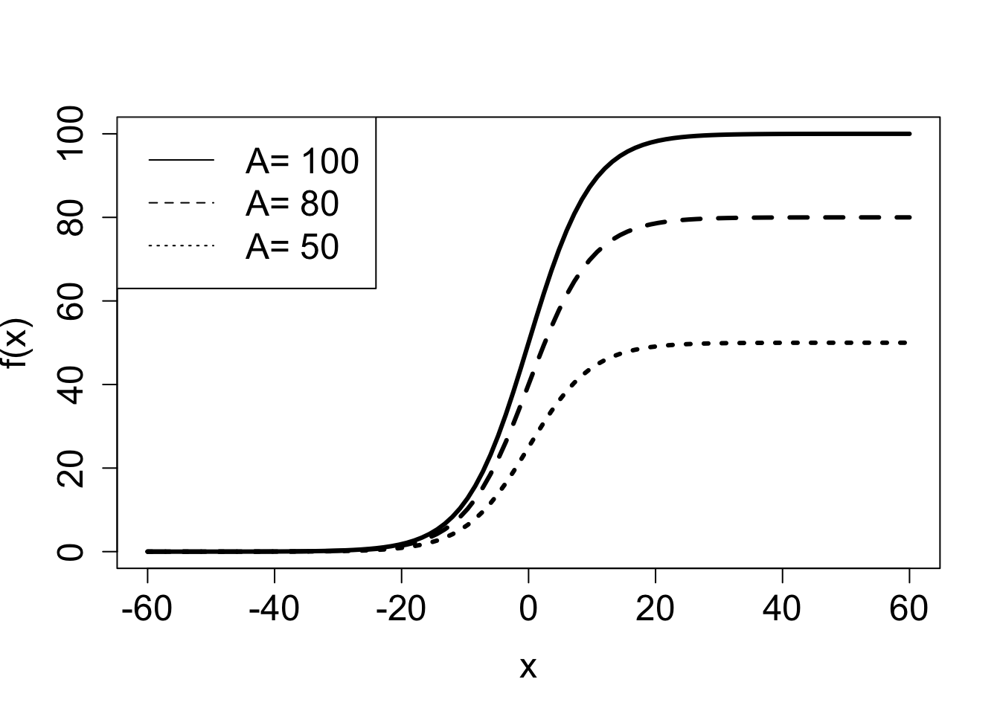
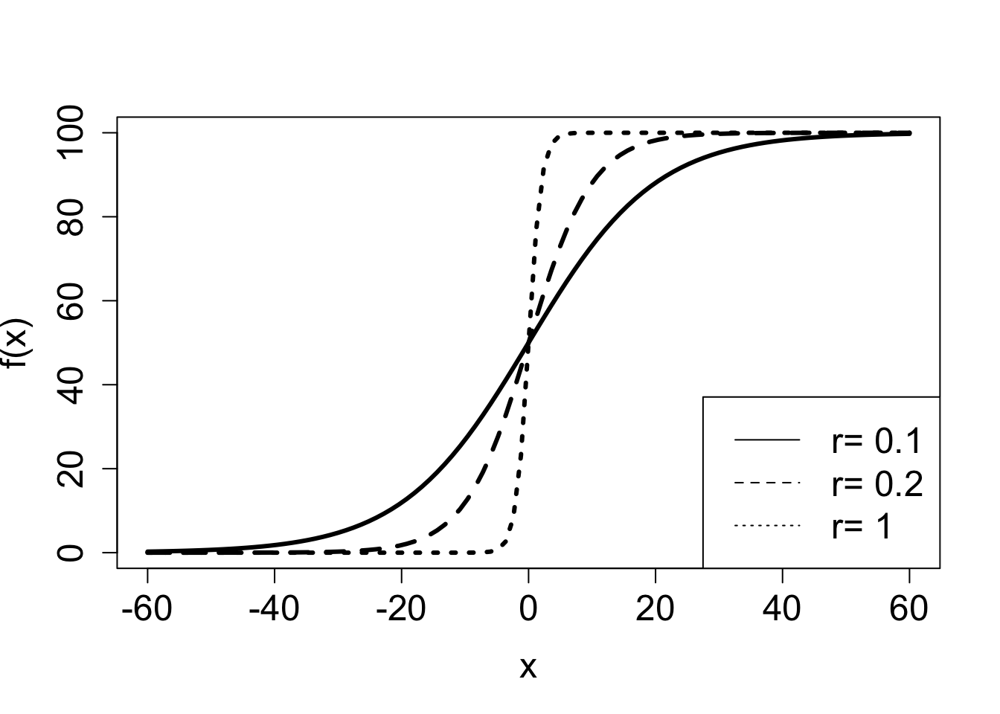
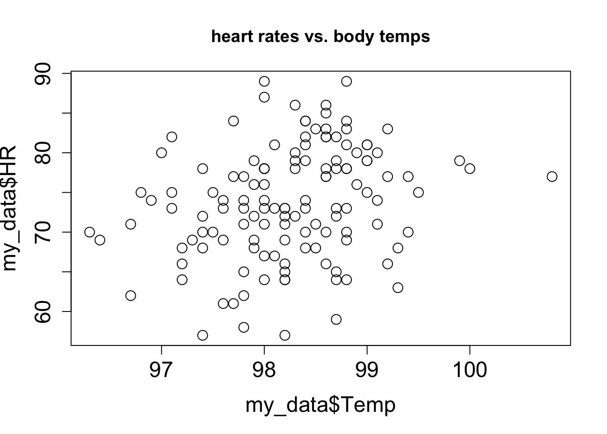
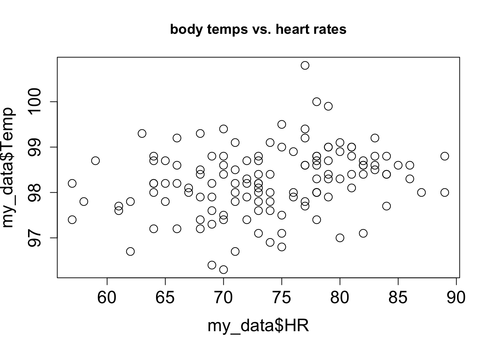

3 Functions and their graphs
Some fathers, if you ask them for the time of day, spit silver dollars.
–Donald Barthelme, The Dead Father
Mathematical models describe how various quantities affect each other. In the last chapter we learned that these descriptions can be written down, often in the form of an equation. For instance, we can describe the total volume of blood pumped over a period of time as the product of stroke volume, the heart rate and the number of minutes, which can be written as an equation. The different quantities have their own meaning and roles, depending on what they stand for. To better describe how these quantities are related we use the deep idea of mathematical functions. In this chapter you will learn to do the following:
- understand the concept of function, dependent and independent variables
- recognize basic functional forms and the shape of their graphs
- predict the effect of parameter changes on graph of a function
- compare the graph of a function with a scatter plot from a data set
3.1 Functions and their graphs
A relationship between two variables addresses the basic question: when one variable changes, how does this affect the other? An equation, like the examples in Section 1.3, allows one to calculate the value of one variable based on the other variable and parameter values. In this section we seek to describe more broadly how two variables are related by using the mathematical concept of functions.
Definition 3.1 A function is a mathematical rule which has an input and an output. A function returns a well-defined output for every input, that is, for a given input value the function returns a unique output value.
In this abstract definition of a function it doesn’t have to be written as an algebraic equation, it only has to return a unique output for any given input value. In mathematics we usually write them down in terms of algebraic expressions. As in mathematical models, you will see two different kinds of quantities in equations that define functions: variables and parameters. The input and the output of a function are usually variables, with the input called the independent variable and the output called the dependent variable.
The relationship between the input and the output can be graphically illustrated in a graph, which is a collection of paired values of the independent and dependent variable drawn as a curve in the plane. Although it shows how the two variables change relative to each other, parameters may change too, which results in a different graph of the function. While graphing calculators and computers can draw graphs for you, it is very helpful to have an intuitive understanding about how a function behaves, and how the behavior depends on the parameters. Here are the three questions to help picture the relationship (assume \(x\) is the independent variable and it is a nonnegative real number):
- what is the value of the function at \(x=0\)?
- what does the function do when \(x\) becomes large (\(x \to \infty\))?
- what does the function do between the two extremes?
Below you will find examples of fundamental functions used in biological models with descriptions of how their parameters influence their graphs.
3.1.1 linear and exponential functions
The reader is probably familiar with linear and exponential functions from algebra courses. However, they are so commonly used that it is worth going over them to refresh your memory and perhaps to see them from another perspective.
Definition 3.2 A linear function \(f(x)\) is one for which the difference in two function values is the same for a specific difference in the independent variable.
In mathematical terms, this can be written an equation for any two values of the independent variable \(x_1\) and \(x_2\) and a difference \(\Delta x\):
\[ f(x_1 + \Delta x) - f(x_1) = f(x_2 + \Delta x) - f(x_2) \]
The general form of the linear function is written as follows:
\[ f(x) = ax + b \tag{3.1}\]
The function contains two parameters: the slope \(a\) and the y-intercept \(b\). The graph of the linear function is a line (hence the name) and the slope \(a\) determines its steepness. A positive slope corresponds to the graph that increases as \(x\) increases, and a negative slope corresponds to a declining function. At \(x=0\), the function equals \(b\), and as \(x \to \infty\), the function approaches positive infinity if \(a>0\), and approaches negative infinity if \(a<0\).
Definition 3.3 An exponential function \(f(x)\) is one for which the ratio of two function values is the same for a specific difference in the independent variable.
Mathematically speaking, this can be written as follows for any two values of the independent variable \(x_1\) and \(x_2\) and a difference \(\Delta x\): \[ \frac{f(x_1 + \Delta x)}{f(x_1)} = \frac{f(x_2 + \Delta x)}{f(x_2)}\]
Exponential functions can be written using different symbolic forms, but they all have a constant base with the variable \(x\) in the exponent. I prefer to use the constant \(e\) (base of the natural logarithm) as the base of all the exponential functions, for reasons that will become apparent in chapter 15. This does not restrict the range of possible functions, because any exponential function can be expressed using base \(e\), using a transformation: \(a^x = e^{x \ln(a)}\). So let us agree to write exponential functions in the following form:
\[ f(x) = a e^{rx} \tag{3.2}\]
The function contains two parameters: the rate constant \(r\) and the multiplicative constant \(a\). The graph of the exponential function is a curve which crosses the y-axis at \(y=a\) (plug in \(x=0\) to see that this is the case). As \(x\) increases, the behavior of the graph depends on the sign of the rate constant \(r\). If \(r>0\), the function approaches infinity (positive if \(a>0\), negative if \(a<0\)) as \(x \to \infty\). If \(r<0\), the function decays at an ever-decreasing pace and asymptotically approaches zero as \(x \to \infty\). Thus the graph of \(f(x)\) is a curve either going to infinity or a curve asymptotically approaching 0, and the steepness of the growth or decay is determined by \(r\).


3.1.1.1 exercises
Answer the questions below, some of which refer to the function graphs in Figure 3.1.
Which of the linear graphs in the first figure corresponds to \(f(x) = 5x\) and which corresponds to \(f(x) = 10-x\)? State which parameter allows you to connect the function with its graph and explain why.
Which of the exponential graphs in the second figure corresponds to \(f(x) = 0.1e^{0.5x}\) and which corresponds to \(f(x) = 12e^{-0.2x}\)? State which parameter allows you to connect the function with its graph and explain why.
Demonstrate algebraically that a linear function of the form given in equation Equation 3.1 satisfies the property of linear functions from Definition 3.2.
Demonstrate algebraically that an exponential function of the form given in equation Equation 3.2 satisfies the property of exponential functions from definition Definition 3.3.
Modify the exponential function by adding a constant term to it \(f(x) = a e^{rx} + b\). What is is the value of this function at \(x=0\)?
How does the function defined in the previous exercise, \(f(x) = a e^{rx} + b\), how does it behave as \(x \to \infty\) if \(r>0\)?
How does the function \(f(x) = a e^{rx} + b\) behave as \(x \to \infty\) if \(r<0\)?
3.1.2 rational and Hill functions
Let us now turn to more complex functions, made up of simpler components that we understand. Consider a ratio of two polynomials, called a rational function. The general form of such functions can be written down as follows, where ellipsis stands for terms with powers lower than \(n\) or \(m\):
\[ f(x) = \frac{a_0 + ... + a_n x^n}{b_0 + ... + b_m x^m} \label{eq:rational_funk} \]
The two polynomials may have different degrees (highest power of the terms, \(n\) and \(m\)), but they are usually the same in most biological examples. The reason is that if the numerator and the denominator are “unbalanced”, one will inevitably overpower the other for large values of \(x\), which would lead to the function either increasing without bound to infinity (if \(n>m\)) or decaying to zero (if \(m>n\)). There’s nothing wrong with that, mathematically, but rational functions are most frequently used to model quantities that approach a nonzero asymptote for large values of the independent variable.
For this reason, let us assume \(m=n\) and consider what happens as \(x \to \infty\). All terms other than the highest-order terms become very small in comparison to \(x^n\) (this is something you can demonstrate to yourself using R), and thus both the numerator and the denominator approach the terms with power \(n\). This can be written using the mathematical limit notation \(\lim_{x \to \infty}\) which describes the value that a function approaches when the independent variable increases without bound: \[ \lim_{x \to \infty} \frac{a_0 + ... + a_n x^n}{b_0 + ... + b_n x^n} = \frac{ a_n x^n}{ b_n x^n} = \frac{ a_n}{ b_n} \] Therefore, the function approaches the value of \(a_n /b_n\) as \(x\) grows.
Similarly, let us consider what happens when \(x=0\). Plugging this into the function results in all of the terms vanishing except for the constant terms, so \[ f(0) = \frac{ a_0}{ b_0} \] Between 0 and infinity, the function either increases or decreases monotonically, depending on which value (\(a_n /b_n\) or \(a_0/b_0\)) is greater.
Example. The following model, called the Hill equation , describes the fraction of receptor molecules which are bound to a ligand, which is a chemical term for a free molecule that binds to another, typically larger, receptor molecule. \(\theta\) is the fraction of receptors bound to a ligand, \(L\) denotes the ligand concentration, \(K_d\) is the dissociation constant, and \(n\) called the binding cooperativity or Hill coefficient:
\[ \theta(L) = \frac{L^n}{ L^n +K_d}\]
The Hill equation is a rational function, and Figure 3.2 shows plots of the graphs of two such functions, and illustrated the effect of two of the parameters on the graphs. This model is further explored in exercise 2.2.10.


3.1.3 Logistic function
A common model of population over time is the logistic function. There are variations on how it is written down, but here is one general form:
\[ f(x) = \frac{A}{1+Be^{-rx}} \tag{3.3}\]
The numerator and denominator both contain exponential functions with the same power. If \(r>0\) when \(x \to \infty\), the denominator approaches 1, since the exponential term decays to zero, and thus:
\[ \lim_{x \to \infty} \frac{A}{1+Be^{-rx}} = A; \; \mathrm{if} \; r>0 \]
On the other hand, if \(r<0\), the exponential term in the denominator grows to infinity and the ratio approaches zero:
\[ \lim_{x \to \infty} \frac{A}{1+Be^{-rx}} = 0; \; \mathrm{if} \; r<0 \]
Notice that switching the sign of \(r\) has the same effect as switching the sign of \(x\), since they are multiplied in the exponential term. Which means that for positive \(r\), if \(x\) is extended to negative infinity, the function approaches 0. This is illustrated in Figure 3.3, which shows the effect of change the constant \(A\) and the rate constant \(r\) on the plot of the logistic functions. The graph of logistic functions has a characteristic sigmoidal (S-shaped) shape, and its steepness is determined by the rate \(r\): if \(r\) is small, the curve is soft, if \(r\) is large, the graph resembles a step function.


3.1.4 Rates of biochemical reactions
Living things are dynamic, they change with time, and much of mathematical modeling in biology is interested in describing these changes. Some quantities change fast and others slowly, and every dynamic quantity has a rate of change, or rate for short. Usually, the quantity that we want to track over time is the variable, and in order to describe how it changes we introduce a rate parameter. If we are describing changes over time, all rate parameters have dimensions with time in the denominator. As a simple example, the velocity of a physical object describes the change in distance over time, so its dimension is \([v] = length/time\).
On the most fundamental level, the work of life is performed by molecules. The protein hemoglobin transports oxygen in the red blood cells, while neurotransmitter molecules like serotonin carry signals between neurons. Enzymes catalyze reactions, like those involved in oxidizing sugar and making ATP, the energy currency of life. Various molecules bind to DNA to turn genes on and off, while myosin proteins walk along actin fibers to create muscle contractions.
In order to describe the activity of biological molecules, we must measure and quantify them. However, they are so small and so numerous that it is not usually practical to count individual molecules (although with modern experimental techniques it is sometimes possible). Instead, biologists describe their numbers using concentrations. Concentration has dimensions of number of molecules per volume, and the units are typically molarity, or moles (\(\approx 6.022*10^{23}\) molecules) per liter. Using concentrations to describe molecule rests on the assumption that there are many molecules and they are well-mixed, or homogeneously distributed throughout the volume of interest.
Molecular reactions are essential for biology, whether they happen inside a bacterial cell or in the bloodstream of a human. Reaction kinetics refers to the description of the rates, or the speed, of chemical reactions. Different reactions occur with different rates, which may be dependent on the concentration of the reactant molecule. Consider a simple reaction of molecule \(A\) (called the substrate) turning into molecule \(B\) (called the product), which is usually written by chemists with an arrow:
\[ A \xrightarrow{k} B \]
But how fast does the reaction take place? To write down a mathematical model, we need to define the quantities involved. First, we have the concentration of the molecule \(A\), with dimensions of concentration. Second, we have the rate of reaction, let us call it \(v\), which has dimension of concentration per time (just like velocity is length per time). How are the two quantities related?
Example: constant (zeroth-order) kinetics In some circumstances, the reaction rate \(v\) does not depend on the concentration of the reactant molecule \(A\). In that case, the relationship between the rate constant \(k\) and the actual rate \(v\) is:
\[ v = k \tag{3.4}\]
Dimensional analysis insists that the dimension of \(k\) must be the dimension of \(v\), or concentration/time. This is known as constant, or zero-order kinetics, and it is observed at concentrations of \(A\) when the reaction is at its maximum velocity: for example, ethanol metabolism by ethanol dehydrogenase in human liver cannot proceed any faster than about 1 drink per hour.
Example: first-order kinetics. . In other conditions, it is easy to imagine that increasing the concentration of the reactant \(A\) will speed up the rate of the reaction. A simple relationship of this type is linear:
\[ v = kA \tag{3.5}\]
In this case, the dimension of the rate constant \(k\) is 1/time. This is called first-order kinetics, and it usually describes reactions when the concentration of \(A\) is small, and there are plenty of free enzymes to catalyze more reactions.
Example: Michaelis-Menten model of enzyme kinetics. However, if the concentration of the substrate molecule \(A\) is neither small nor large, we need to consider a more sophisticated model. An enzyme is a protein which catalyzes a biochemical reaction, and it works in two steps: first it binds the substrate, at which point it can still dissociate and float away, and then it actually catalyzes the reaction, which is usually practically irreversible (at least by this enzyme) and releases the product. The enzyme itself is not affected or spent, so it is free to catalyze more reactions. Let denote the substrate (reactant) molecule by \(A\), the product molecule by \(B\), the enzyme by \(E\), and the complex of substrate and enzyme \(AE\). The classic chemical scheme that describes these reactions is this:
\[ A + E \underset{k_{-1}}{\overset{k_1}{\rightleftharpoons}} AE \xrightarrow{k_2} E + B \]
You could write three different kinetic equations for the three different arrows in that scheme. Michaelis and Menten used the simplifying assumptions that the binding and dissociation happens much faster than the catalytic reaction, and based on this they were able to write down an approximate, but extremely useful Michaelis-Menten model of an enzymatic reaction:
\[ v = \frac{v_{max} A}{K_M+A} \tag{3.6}\]
Here \(v\) refers to the rate of the entire catalytic process, that is, the rate of production of \(B\), rather than any intermediate step. Here the reaction rate depends both on the concentration of the substrate \(A\) and on the two constants \(v_{max}\), called the maximum reaction rate, and the constant \(K_M\), called the Michaelis constant. They both depend on the rate constants of the reaction, and \(v_{max}\) also depends on the concentration of the enzyme. The details of the derivation are beyond us for now, but you will see in the following exercises how this model behaves for different values of \(A\).
3.1.4.1 exercises:
For each biological model below answer the following questions in terms of the parameters in the models, assuming all are nonnegative real numbers. 1) what is the value of the function when the independent variable is 0? 2) what value does the function approach when the independent variable goes to infinity? 3) verbally describe the behavior of the functions between 0 and infinity (e.g., function increases, decreases).
Model of number of mutations \(M\) as a function of time \(t\): \[ M(t) = M_0 + \mu t\]
Model of molecular concentration \(C\) as a function of time \(t\): \[ C(t) = C_0 e^{-kt} \]
Model of cooperative binding of ligands, with fraction of bound receptors \(\theta\) as a function of ligand concentration \(L\): \[ \theta = \frac{L^n}{L^n + K_d}\]
Model of tree height \(H\) (length) as a function of age \(a\) (time): \[ H(a) = \frac{b a }{c + a}\]
Model of concentration of a gene product \(G\) (concentration) as a function of time \(t\): \[ G(t) = G_m (1 - e^{-\alpha t})\]
Michaelis-Menten model of enzyme kinetics, \(v\) is reaction rate (1/time) and \(S\) is substrate concentration: \[ v(S) = \frac{v_{max} S}{K_m + S}\]
Logistic model of population growth, \(P\) is population size and time \(t\): \[ P(t) = \frac{A e^{kt}}{1 + B(e^{kt} -1)} \]
3.2 Scatter plots and relationships between variables
Although there is always error in any real data, there may be a relationship between the two variables that is not random: for example, when one goes up, the other one tends to go up as well. These relationships may be complicated, but in this chapter we will focus on the the simplest and most common type of relationship: linear, where a change in one variable is associated with a proportional change in the other, plus an added constant. This is expressed mathematically using the familiar equation for a linear function, with parameters slope (\(a\)) and intercept (\(b\)):
\[ y = ax + b \]
Let us say you have measured some data for two variables, which we will call, unimaginatively, \(x\) and \(y\). This data set consists of pairs of numbers: one for \(x\), one for \(y\), for example, the heart rate and body temperature of a person go together. They cannot be mixed up between different people, as the data will lose all meaning. We can denote this a list of \(n\) pairs of numbers: \((x_i, y_i)\) (where \(i\) is an integer between 1 and \(n\)). Since this is a list of pairs of numbers, we can plot them as separate points in the plane using each \(x_i\) as the x-coordinate and each \(y_i\) as the y-coordinate. This is called a scatter plot of a two-variable data set. For example, two scatter plots of a data set of heart rate and body temperature are shown in Figure 3.4. In the first one, the body temperature is on the x-axis, which makes it the explanatory variable; in the second one, the body temperature is on the y-axis, which makes it the response variable.

